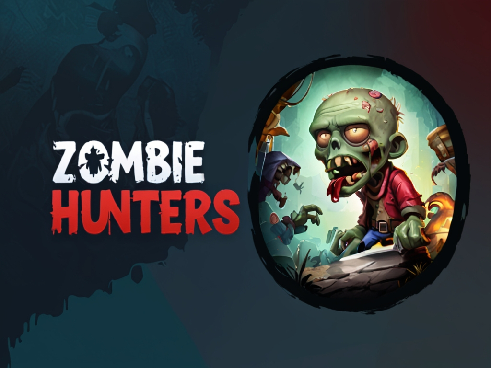
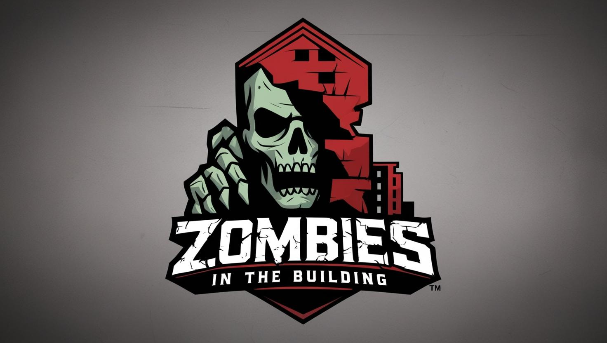

Summary
Zombies in the Building is a first-person survival project built in Unity. The goal of this project was to create a tense, playable experience that rewards careful movement, resource awareness, and quick decision-making. The project focuses on gameplay feel, atmosphere, and a simple but effective loop for the player.
This project is one of my stronger examples of turning a concept into a small build. It demonstrates my ability to work with game systems, package a playable experience, and present a thrilling experience.
Project Breakdown
- Engine: Unity
- Project Type: Survival / Horror
- My Role: Gameplay implementation, build packaging, testing, and presentation
- Tools Used: Unity, C++, Git/GitHub
- Release Format: Installer and portable build files
Build Options
The game build files are hosted on itch.io due to file size limits. Click below to download the installer or portable version.
Visuals
Replace these with screenshots from the project.


Reflection
This project helped me improve my understanding of pacing, tension, and what makes a survival game feel engaging. I learned that even simple mechanics can feel strong when they are presented clearly and supported by good flow. I also gained experience in organizing a project so it could be shared as a finished build.